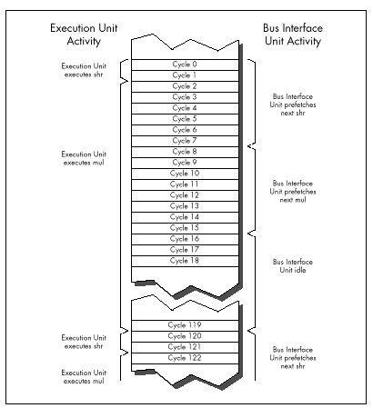

| Previous | Table of Contents | Next |
Clearly, either instruction fetch time or Execution Unit execution time—or even a mix of the two, if an instruction is partially prefetched—can determine code performance. Some people operate under a rule of thumb by which they assume that the execution time of each instruction is 4 cycles times the number of bytes in the instruction. While that’s often true for register-only code, it frequently doesn’t hold for code that accesses memory. For one thing, the rule should be 4 cycles times the number of memory accesses, not instruction bytes, since all accesses take 4 cycles on the 8088-based PC. For another, memory-accessing instructions often have slower Execution Unit execution times than the 4 cycles per memory access rule would dictate, because the 8088 isn’t very fast at calculating memory addresses. Also, the 4 cycles per instruction byte rule isn’t true for register-only instructions that are already in the prefetch queue when the preceding instruction ends.
The truth is that it never hurts performance to reduce either the cycle count or the byte count of a given bit of code, but there’s no guarantee that one or the other will improve performance either. For example, consider Listing 4.7, which consists of a series of 4-cycle, 2-byte MOV AL,0 instructions, and which executes at the rate of 1.81 µs per instruction. Now consider Listing 4.8, which replaces the 4-cycle MOV AL,0 with the 3-cycle (but still 2-byte) SUB AL,AL, Despite its 1-cycle-per-instruction advantage, Listing 4.8 runs at exactly the same speed as Listing 4.7. The reason: Both instructions are 2 bytes long, and in both cases it is the 8-cycle instruction fetch time, not the 3 or 4-cycle Execution Unit execution time, that limits performance.

Figure 4.4 Execution and instruction prefetching sequence for Listing 4.6.
LISTING 4.7 LST4-7.ASM
; Measures the performance of repeated MOV AL,0 instructions,
; which take 4 cycles each according to Intel's official
; specifications.
;
sub ax,ax
call ZTimerOn
rept 1000
mov al,0
endm
call ZTimerOff
LISTING 4.8 LST4-8.ASM
; Measures the performance of repeated SUB AL,AL instructions,
; which take 3 cycles each according to Intel's official
; specifications.
;
sub ax,ax
call ZTimerOn
rept 1000
sub al,al
endm
call ZTimerOff
As you can see, it’s easy to be drawn into thinking you’re saving cycles when you’re not. You can only improve the performance of a specific bit of code by reducing the factor—either instruction fetch time or execution time, or sometimes a mix of the two—that’s limiting the performance of that code.
In case you missed it in all the excitement, the variability of prefetching means that our method of testing performance by executing 1,000 instructions in a row by no means produces “true” instruction execution times, any more than the official execution times in the Intel manuals are “true” times. The fact of the matter is that a given instruction takes at least as long to execute as the time given for it in the Intel manuals, but may take as much as 4 cycles per byte longer, depending on the state of the prefetch queue when the preceding instruction ends.
|
The only true execution time for an instruction is a time measured in a certain context, and that time is meaningful only in that context. |
What we really want is to know how long useful working code takes to run, not how long a single instruction takes, and the Zen timer gives us the tool we need to gather that information. Granted, it would be easier if we could just add up neatly documented instruction execution times—but that’s not going to happen. Without actually measuring the performance of a given code sequence, you simply don’t know how fast it is. For crying out loud, even the people who designed the 8088 at Intel couldn’t tell you exactly how quickly a given 8088 code sequence executes on the PC just by looking at it! Get used to the idea that execution times are only meaningful in context, learn the rules of thumb in this book, and use the Zen timer to measure your code.
Don’t think that because overall instruction execution time is determined by both instruction fetch time and Execution Unit execution time, the two times should be added together when estimating performance. For example, practically speaking, each SHR in Listing 4.5 does not take 8 cycles of instruction fetch time plus 2 cycles of Execution Unit execution time to execute. Figure 4.3 shows that while a given SHR is executing, the fetch of the next SHR is starting, and since the two operations are overlapped for 2 cycles, there’s no sense in charging the time to both instructions. You could think of the extra instruction fetch time for SHR in Listing 4.5 as being 6 cycles, which yields an overall execution time of 8 cycles when added to the 2 cycles of Execution Unit execution time.
Alternatively, you could think of each SHR in Listing 4.5 as taking 8 cycles to fetch, and then executing in effectively 0 cycles while the next SHR is being fetched. Whichever perspective you prefer is fine. The important point is that the time during which the execution of one instruction and the fetching of the next instruction overlap should only be counted toward the overall execution time of one of the instructions. For all intents and purposes, one of the two instructions runs at no performance cost whatsoever while the overlap exists.
As a working definition, we’ll consider the execution time of a given instruction in a particular context to start when the first byte of the instruction is sent to the Execution Unit and end when the first byte of the next instruction is sent to the EU.
Reducing the impact of the prefetch queue cycle-eater is one of the overriding principles of high-performance assembly code. How can you do this? One effective technique is to minimize access to memory operands, since such accesses compete with instruction fetching for precious memory accesses. You can also greatly reduce instruction fetch time simply by your choice of instructions: Keep your instructions short. Less time is required to fetch instructions that are 1 or 2 bytes long than instructions that are 5 or 6 bytes long. Reduced instruction fetching lowers minimum execution time (minimum execution time is 4 cycles times the number of instruction bytes) and often leads to faster overall execution.
While short instructions minimize overall prefetch time, ironically they actually often suffer more from the prefetch queue bottleneck than do long instructions. Short instructions generally have such fast execution times that they drain the prefetch queue despite their small size. For example, consider the SHR of Listing 4.5, which runs at only 25 percent of its Execution Unit execution time even though it’s only 2 bytes long, thanks to the prefetch queue bottleneck. Short instructions are nonetheless generally faster than long instructions, thanks to the combination of fewer instruction bytes and faster Execution Unit execution times, and should be used as much as possible—just don’t expect them to run at their “official” documented speeds.
| Previous | Table of Contents | Next |